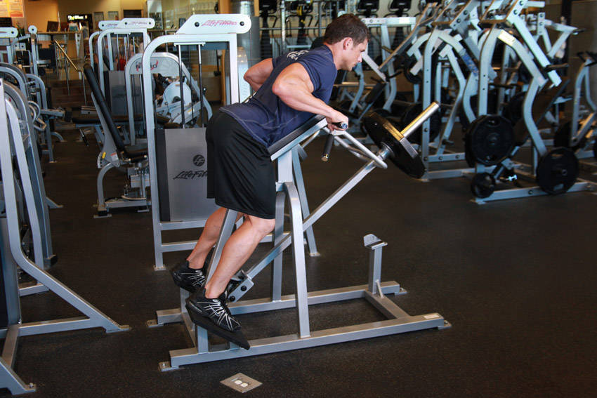

- Load up the T-bar Row Machine with the desired weight and adjust the leg height so that your upper chest is at the top of the pad. Tip: In some machines all you can do is stand on the appropriate step that allows you to be at a height that has the upper chest at the top of the pad.
- Lay face down on the pad and grab the handles. You can either use a palms down, palms up, or palms in position depending on what part of your back you want to emphasize.
- Lift the bar off the rack and extend your arms in front of you. This will be your starting position.
- As you exhale slowly pull the weight up and squeeze your back at the top of the movement. Tip: Keep the upper arms as close to the torso as possible throughout the movement in order to better engage the back muscles. Also, do not lift your body off of the pad at any time and refrain from using the biceps to lift the weight.
- After a second contraction at the top of the movement, as you inhale, slowly go back down to the starting position.
- Repeat for the recommended amount of repetitions.
This exercise appears in Programmd training programs. Take the quiz to find one for your gym.
Find my program